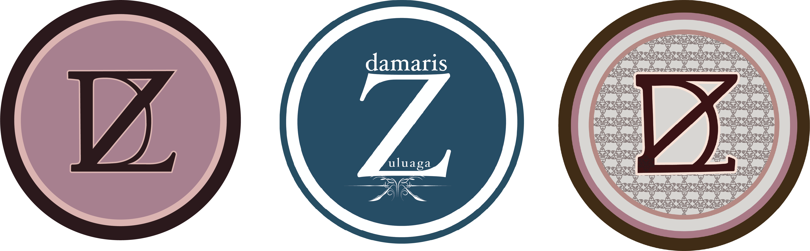
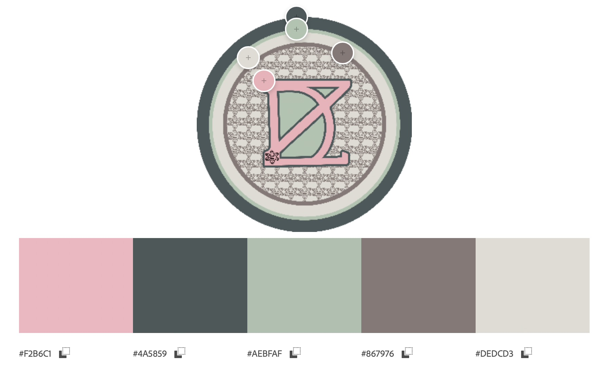

- Project:
- Timeline:
- Tools:
Description:
In my personal brand, I interwove my initials, “DZ,” to create a sense of connection—each letter supporting the other as a symbol of collaboration, unity, and belonging. A soft yet confident color palette reinforces this idea, expressing authenticity, compassion, and optimism while signaling a forward-looking spirit. At the center of the emblem, subtle motifs inspired by Taíno symbolism add deeper meaning. These glyph-like forms, reminiscent of traditional petroglyphs, reflect themes of renewal, cosmic balance, and an enduring connection to the land. By incorporating these indigenous influences, the design honors ancestral heritage, grounds the brand in community, and embodies a sense of growth and transformation. Together, these elements communicate a message of inclusive strength—celebrating our origins, embracing shared identity, and looking toward a brighter, collective future.
Logo Variations
Here is my personal logo shown in two variations — color and black & white — presented in different sizes to demonstrate its versatility and adaptability.

First featurette heading. It'll blow your mind.
Donec ullamcorper nulla non metus auctor fringilla. Vestibulum id ligula porta felis euismod semper. Praesent commodo cursus magna, vel scelerisque nisl consectetur. Fusce dapibus, tellus ac cursus commodo.

Topography
&
Construction

Using the font Bodoni 72 Bold I combined the letters "D" and "Z". The accompanying image demonstrates which parts of the original letterforms were incorporated into the final design.
Logo Process

In this phase of my project it was difficult to decide which direction to go with. Between the construction of the letters to the color palette. Ultimately, I was able to come to the decision with soft neutral colors for my personal logo.
Color Palette

This palette combines soft pink, slate, sage, taupe, and light neutral tones to create a balanced and sophisticated look. The colors reflect warmth, creativity, and cultural inspiration while maintaining a modern and professional feel that supports my personal brand.
Mockups

Bag Mockup

Hat Mockup